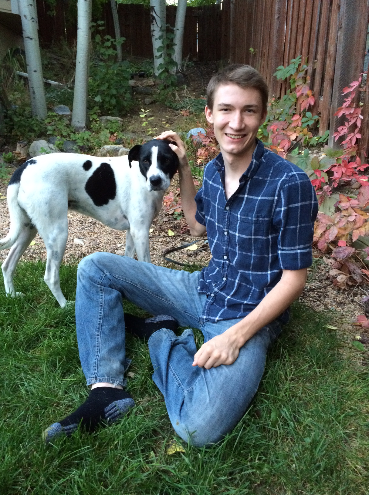

<!DOCTYPE html><html></html><head><title>Brian - About</title><link href="https://fonts.googleapis.com/css?family=Source+Sans+Pro" rel="stylesheet"><!-- Google Analytics--><script>(function(i,s,o,g,r,a,m){i['GoogleAnalyticsObject']=r;i[r]=i[r]||function(){
(i[r].q=i[r].q||[]).push(arguments)},i[r].l=1*new Date();a=s.createElement(o),
m=s.getElementsByTagName(o)[0];a.async=1;a.src=g;m.parentNode.insertBefore(a,m)
})(window,document,'script','https://www.google-analytics.com/analytics.js','ga');
ga('create', 'UA-92261942-1', 'auto');
ga('send', 'pageview');
</script><link rel="stylesheet" type="text/css" href="css/app.css"><link rel="stylesheet" type="text/css" href="css/about.css"></head><body><div id="menu"><div id="menu-items"><div><a class="menu-item" id="home-button" href="/"><span class="menu-item-text">Home<div class="underline-slide"></div></span></a></div><div><a class="menu-item" href="thoughts"><span class="menu-item-text">Thoughts<div class="underline-slide"></div></span></a></div><div><a class="menu-item" href="projects"><span class="menu-item-text">Projects<div class="underline-slide"></div></span></a></div><div><a class="menu-item" href="#"><span class="menu-item-text">Media<div class="underline-slide"></div></span></a></div><div><a class="menu-item" href="about"><span class="menu-item-text">About<div class="underline-slide"></div></span></a></div></div></div><script>// Underline the current page based on what was passed to this mixin through the selected parameter
var currentPage = "About"
var menuItems = document.getElementsByClassName("menu-item-text")
for (var i = 0; i < menuItems.length; i++) {
  if (menuItems[i].textContent.toLowerCase() == currentPage.toLowerCase()) {
    // Set the underline to full width
    menuItems[i].childNodes[1].setAttribute("style", "width: 100%")
  }
}
</script><div id="container"><div id="main"><div id="content-side-container"><div id="content-side"><p id="content-side-text">A picturesque fall photo of me and my dog Trixie. If I'm lucky I get a photogenic picture about twice a year... This was one of those photos.</p></div></div><div id="content-center"><h1>About Me</h1><p>Hello and welcome to my personal website. I'm a pretty huge nerd and I spend most of my time on the computer, reading, or with friends. I'm always looking for ways to learn and improve, even at the cost of my own sanity.</p><p>As my day job, I work doing full-stack web development in Asp.net MVC. At night, I work on side projects. One of my larger goals at the moment is to create a source of income outside my job. I am of the opinion that everyone should strive to have multiple streams of income, so as to reduce dependency on a single one.</p><h1>Contact</h1><p>The best way to get ahold of me is through email:<br><a class="email" href="mailto:me@brianschmoker.com">me@brianschmoker.com</a></p></div></div><div id="footer"><ul><li class="footer-item">Home</li><li class="footer-item">About</li><li class="footer-item">Thoughts</li><li class="footer-item">Projects</li><li class="footer-item">Media</li></ul></div></div></body>